ကျွန်တော်တို့ရဲ့ စကြာဝဠာကြီးမှာ ဂလက်ဆီပေါင်း ဘယ်လောက် ရှိလဲဆိုတာ ဘယ်သူမှတော့ သေချာ မသိကြပါဘူး။ ပညာရှင် အများစု ခန့်မှန်းတာကတော့ စုစုပေါင်း ဂလက်ဆီ သန်း ၁၀၀,၀၀၀ ကနေ ၂၀၀,၀၀၀ ကြား ရှိမယ်လို့ ယူဆကြပါတယ်။ ဒါတောင် လျှော့လျှော့ပေါ့ပေါ့ ခန့်မှန်းထားတာပါ။ ပညာရှင် အများစုကတော့ တကယ်ရှိတဲ့ ဂလက်ဆီ အရေအတွက်ဟာ ဒီ့ထက် ပိုမယ်လို့ ယူဆကြပါတယ်။
စကြာဝဠာထဲမှာ ရှိတဲ့ ဂလက်ဆီတွေကို အဓိကအားဖြင့် သုံးမျိုး ခွဲခြား နိုင်ပါတယ်။ ဘဲဥပုံ (Eliptical)၊ ခရုပတ်ပုံ (Spiral) နဲ့ ပုံသဏ္ဍာန် အတိအကျ မရှိတဲ့ (Irregular) ဆိုပြီး ပုံစံ သုံးမျိုး ခွဲခြားထားတာပါ။ ဒီ ခွဲခြားမှုကို နာမည်ကျော် နက္ခတ်ပညာရှင် တစ်ဦးဖြစ်တဲ့ အက်ဒ်ဝင် ဟတ်ဘယ်လ် (Edwin Hubble) က စတင် သုံးစွဲခဲ့တာ ဖြစ်ပါတယ်။ ဒီစနစ်ခွဲခြားမှုက ဂလက်ဆီကို မြင်ရတဲ့ အမြင်တခုထဲကို ကြည့်ပြီး ခွဲခြားတဲ့ စနစ် ဖြစ်ပါတယ်။
ကျွန်တော်တို့ နေတဲ့ မစ်ကီးဝေး ဂလက်ဆီ ကြီးဟာဆို ခရုပတ် အမျိုးအစားထဲ ပါဝင်ပါတယ်။ ကျွန်တော်တို့ ဂလက်ဆီကြီးရဲ့ သက်တမ်းဟာ နှစ် ၁၃.၂ ဘီလီယံ (နှစ်သန်း ၁၃,၂၀၀) လောက်ရှိပြီလို့ ခန့်မှန်းပါတယ်။ အချင်းအားဖြင့် အလင်းနှစ် ၁၀၀,၀၀၀ တောင် ကျယ်ပါတယ်။ ဆိုလိုတာက ကျွန်တော်တို့ မစ်ကီးဝေးရဲ့ တဖက်စွန်းမှာ ရှိနေတဲ့ ကြယ်တလုံးဆီက အလင်းရောင် တခြား တဖက်စွန်းကို ရောက်ဖို့ အချိန် နှစ် ၁၀၀,၀၀၀ ကြာမယ်လို့ ပြောတာပါ။ အဲ့လောက်ထိအောင် အရွယ်ကြီးပါတယ်။
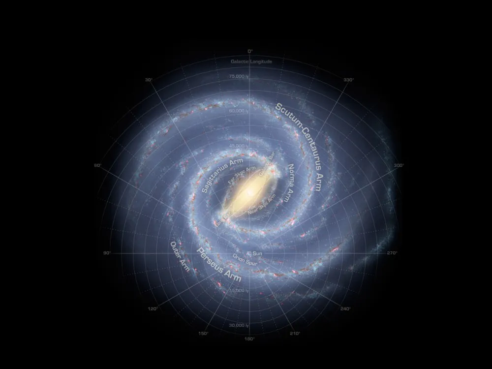
Milky Way Galaxy (Photo: NASA)ကျွန်တော်တို့ မစ်ကီးဝေး ဂလက်ဆီကြီးကို အပေါ်ဖက်ကနေ စီးပြီး ကြည့်လိုက်မယ်ဆို ခရူပတ်ပုံ လက်တံတွေ အများကြီးနဲ့ တွေ့ရမှာ ဖြစ်ပါတယ်။ ဒါပေမယ့် ဘေးတိုက် ကြည့်လိုက်ရင်တော့ ပုံပျက်ပန်းပျက် ဖြစ်နေတဲ့ ခပ်ပြားပြား ဓါတ်ပြား တချပ်လို တွေ့ရမှာ ဖြစ်ပါတယ်။ ဒီလို ဖြစ်ရတာက မစ်ကီးဝေးနဲ့ ကပ်နေတဲ့ ဂလက်ဆီ အသေးလေး နှစ်ခုကြောင့် ဖြစ်ရတာပါ။ ဒီနှစ်ခုကိုတော့ ပညာရှင်များက မက်ဂျဲလင် တိမ်ကြီးနဲ့ မက်ဂျဲလင် တိမ်သေးလေး (Large Magellanic cloud and Small Magellanic Cloud) ဆိုပြီး နာမည်ပေးထားကြပါတယ်။
ဒီ မစ်ကီးဝေး ဂလက်ဆီကြီးရဲ့ ဒြပ်ထု ၉၀% က မျက်စေ့နဲ့ မမြင်ရတဲ့၊အမှောင်ဒြပ် (Dark Matter) နဲ့ ဖွဲ့စည်းထားတာ ဖြစ်ပါတယ်။ ပြောရရင် ဒီအမှောင်ဒြပ် ဆိုတာ အခုထိ ရှာလို့ မတွေ့ သေးပါဘူး။ ဒါပေမယ့် အကယ်လို့သာ လက်ရှိ မြင်ရတဲ့ ကြယ်တွေရဲ့ ဒြပ်ထုတွေနဲ့ချည်းပဲဆို အခု တွေ့ရတဲ့ မစ်ကီးဝေးရဲ့ ပုံထွက်လာမှာ မဟုတ်ပါဘူး။ ဒီ အမှောင်ဒြပ် ပါမှသာ မစ်ကီးဝေးဟာ ဒီလို ခရုပတ်ပုံ ထွက်လာမှာ ဖြစ်ပါတယ်။
ကျွန်တော်တို့ရဲ့ စကြာဝဠာ ကြီးထဲက အခြား ဂလက်ဆီတွေဆီကို ခရီးထွက် ကြည့်ကြရအောင်ပါဗျာ။
Galaxy NGC 6753
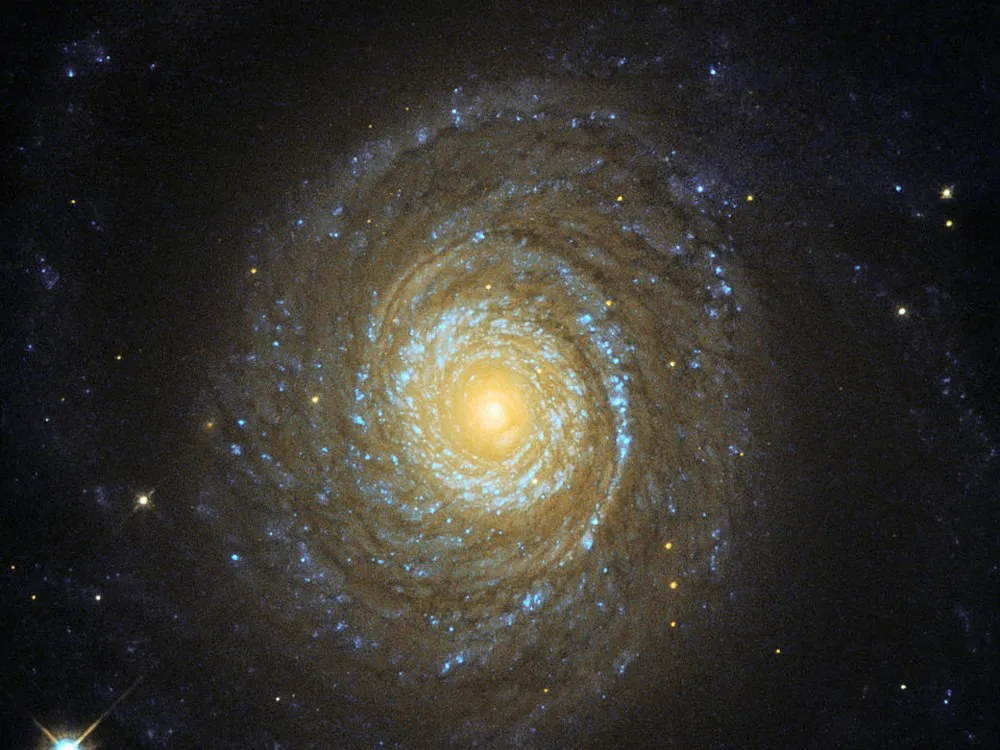
Galaxy NGC 6753 (Photo: NASA)ဒီပုံကို နာဆာက လွှတ်တင်ထားတဲ့ ဟတ်ဘယ်လ် နက္ခတ်မှန်ပြောင်းကြီး (NASA/ESA Hubble Space Telescope) ကနေ ရိုက်ကူးထားတဲ့ ပုံဖြစ်ပါတယ်။ ဒီ ဂလက်ဆီ ကြီးမှာ လှပတဲ့ ခရုပတ် လက်မောင်းတွေ ရှိပြီး ပုံမှာ မြင်ရတဲ့ အပြာရောင် ခရုပတ်ခွေတွေက ကြယ်အသစ်တွေ ဖြစ်နေတဲ့ နေရာဒေသတွေ ဖြစ်ပါတယ်။ ဒီ ဂလက်ဆီဟာ ကျွန်တော်တို့နဲ့ဆို အလင်းနှစ် သန်း ၁၅၀ ကွာဝေးပါတယ်။
Galaxy NGC 4248
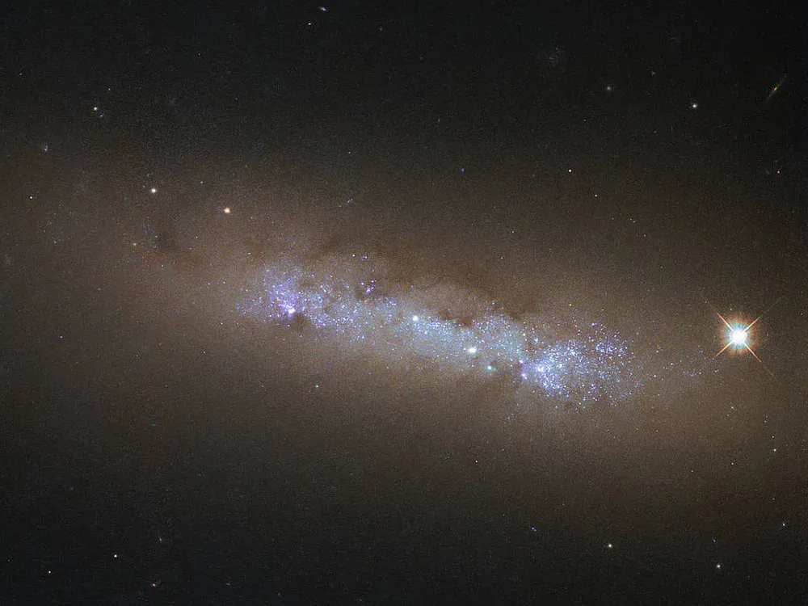
Galaxy NGC 4248 (Photo: NASA)ဒီ ဂလက်ဆီက ကျွန်တော်တို့ ဆီကနေ အလင်းနှစ် ၂၅ သန်း အကွာမှာ ရှိပါတယ်။ ဒီဂလက်ဆီက တကယ်က ခရုပတ်ပုံ ဂလက်ဆီပါ။ ဒါပေမယ့် ကျွန်တော်တို့က ဘေးတိုက် မြင်ရတာမို့ ခရုပတ်တွေကို မတွေ့ရတာပါ။ ဒီပုံမှာ ကြယ်တွေဟာ စိန်မှုန်လေးတွေ ကျဲထား သလိုမျိုး လှပစွာ တွေ့မြင်နိုင်ပါတယ်။
Galaxy NGC 2500
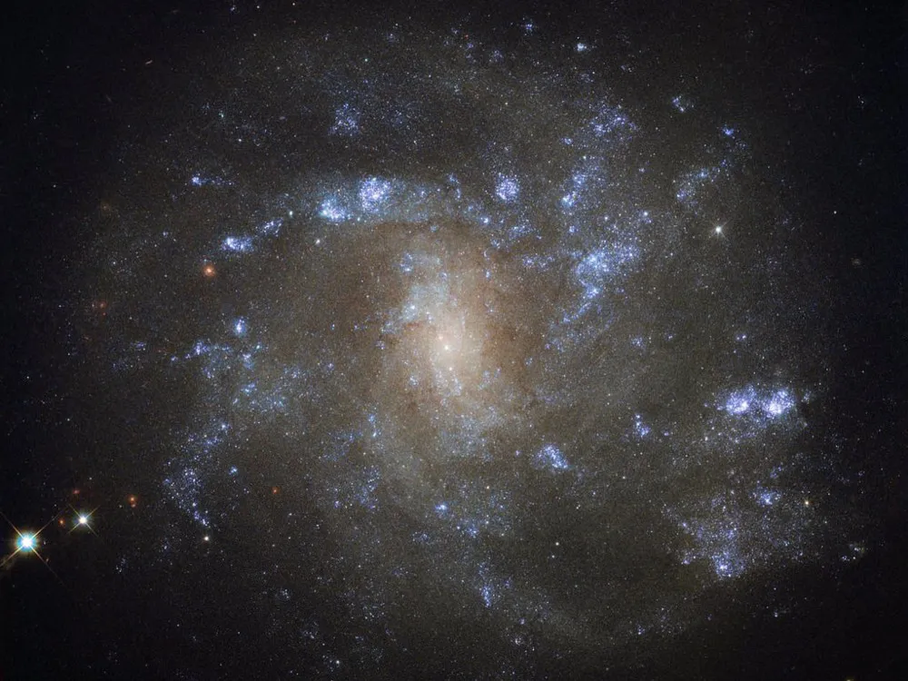
Galaxy NGC 2500 (Photo: NASA)ဒီ ဂလက်ဆီကို လွန်ခဲ့တဲ့ နှစ် ၂၀၀ ကျော်လောက်ကတဲက ဗြိတိသျှ နက္ခတ်ပညာရှင် ဝီလီယံ ဟာရှဲလ် (William Herschel) က ရှာဖွေတွေ့ရှိခဲ့တာ ဖြစ်ပါတယ်။ ကမ္ဘာကနေ အလင်းနှစ် သန်း ၃၀ အကွာမှာ ရှိပါတယ်။ ဒီပုံမှာဆို လင်းနေတဲ့ ဗဟိုချက်ကို မြင်ရမှာ ဖြစ်ပြီး ဘေးက ခရုပတ် လက်တံတွေကိုတော့ ခပ်မှိန်မှိန်ပဲ တွေ့ကြရမှာပါ။ ဒီ ခရုပတ် လက်တံတွေဟာ လက်ရှိမှာ ကြယ်အသစ်တွေ ဖြစ်ပေါ်နေဆဲမို့ သိပ်အလင်းရောင် မတောက်သေးတာ ဖြစ်ပါတယ်။
Andromeda Galaxy
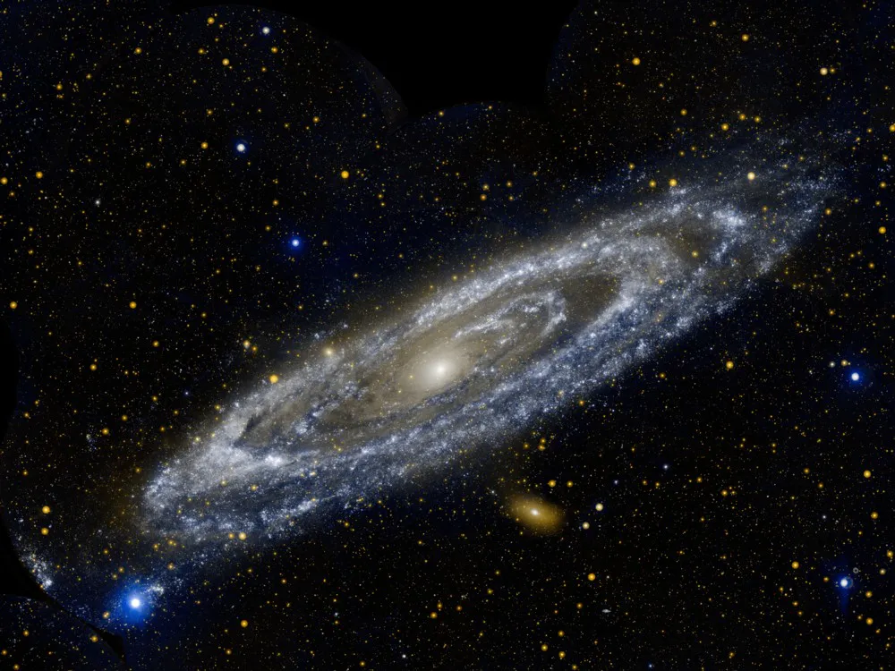
Andromeda Galaxy (Photo: NASA)ဒါကတော့ ကျွန်တော်တို့ရဲ့ “စတား” ဂလက်ဆီပါ ခင်ဗျာ။ မစ်ကီးဝေးနဲ့ အနီးဆုံးမှာ ရှိပြီး အကွာအဝေး အလင်းနှစ် ၂.၆ သန်းပဲ ဝေးပါတယ်။ မှန်ပြောင်းမပါပဲ မြင်ရတဲ့ တခုတည်းသော ဂလက်ဆီလဲ ဖြစ်ပါတယ်။ ခရုပတ်ပုံ ဂလက်ဆီ ဖြစ်ပြီး မစ်ကီးဝေးနဲ့ အရွယ် အတူတူလောက် ရှိပါတယ်။ အင်ဒရိုမီဒါ ဂလက်ဆီနဲ့ မစ်ကီးဝေး ဂလက်ဆီကြီး နှစ်ခုဟာ တစ်ခုနဲ့ တစ်ခု နီးကပ်လာနေပြီး နောက် နှစ်ပေါင်း သန်း ၇,၀၀၀ လောက် ရှိရင် ပေါင်းမိသွားကြမယ်လို့ ဆိုပါတယ်။
Galaxy IC342
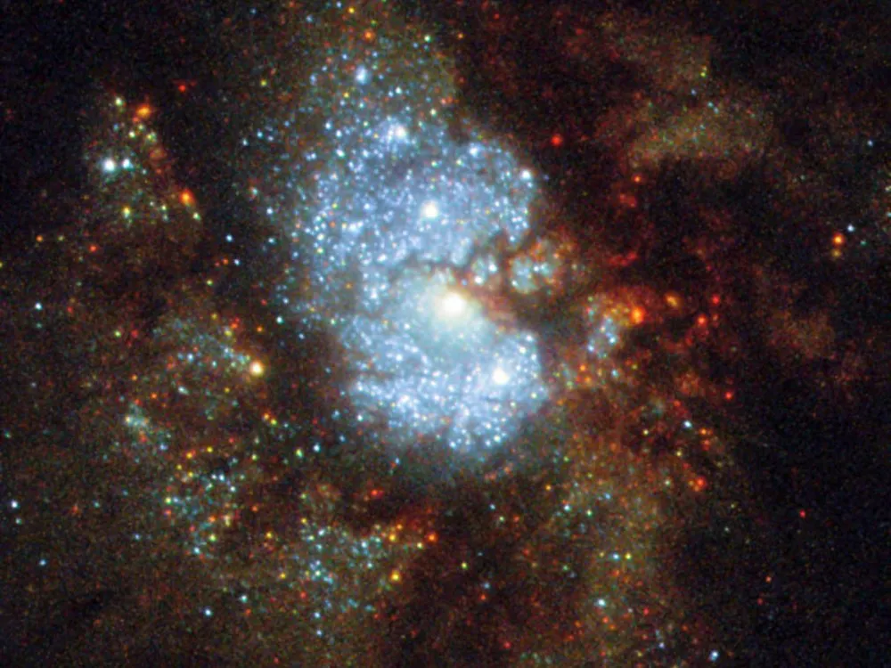
Galaxy IC342 (Photo: NASA)ဒီဂလက်ဆီဟာ တကယ်တာ့ အတော်လေးကို လင်းတဲ့ ဂလက်ဆီ တခုဖြစ်ပါတယ်။ ဒါပေမယ့် အလွယ်တကူတော့ မမြင်နိုင်ပါဘူး။ ဘာလို့လဲဆို သူက ကျွန်တော်တို့ မစ်ကီးဝေးကြီးရဲ့ အလယ်ဗဟိုရဲ့ ဟိုဖက်ခြမ်း ရောက်နေလို့ပါ။ ဒီတော့ ကျွန်တော်တို့ ဆီက လှမ်းကြည့်ရင် ဒီ အလယ်ဗဟိုက လင်းနေတဲ့ ကြယ်တွေကို ဖြတ်ပြီး ကြည့်ရမှာ ဖြစ်ပါတယ်။ ဒါကြောင့် သူ့ကို “ပုန်းနေသော ဂလက်ဆီ (Hidden Galaxy)” လို့လဲ ခေါ်ကြပါတယ်။ ဒီဂလက်ဆီဟာ မစ်ကီးဝေးကနေ အလင်းနှစ် ၁၀.၇ သန်းအကွာမှာ ရှိပါတယ်။
Cigar Galaxy or Messier 82
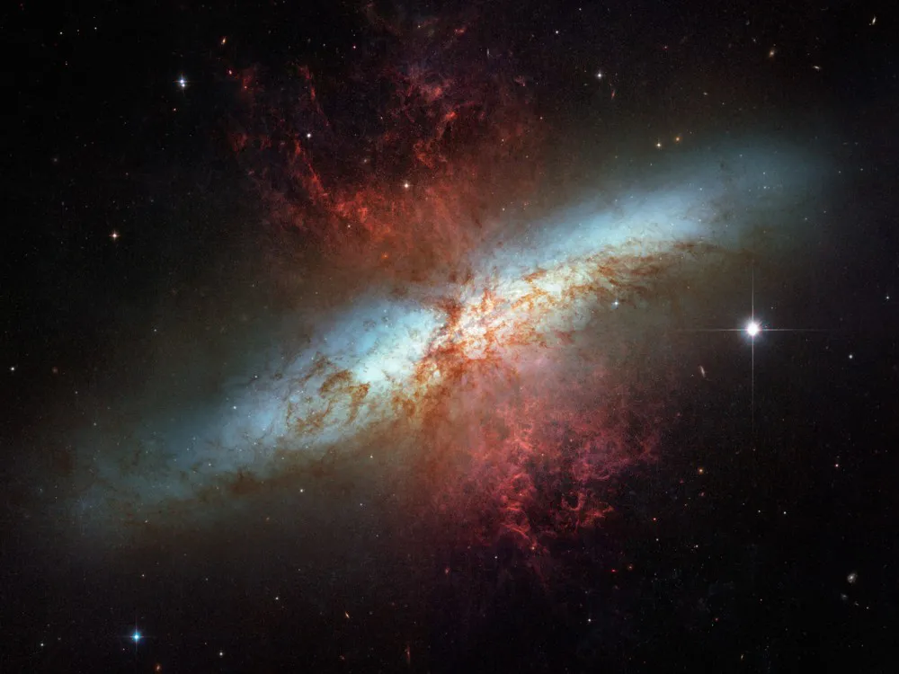
Cigar Galaxy or Messier 82 (Photo: NASA)ဒီဂလက်ဆီက ဂလက်ဆီ ၅၁ ခု ပါတဲ့ အစုအဝေးကြီးထဲက ဂလက်ဆီ တခုဖြစ်ပါတယ်။ သူ့ပုံစံက ရှည်ရှည်မျောမျော ပုံစံပါ။ ကျွန်တော်တို့ ဆီကနေဆို အလင်းနှစ် ၁၂ သန်း ဝေးပါတယ်။ သူ့ဗဟိုမှာ ကြယ်သစ်တွေ အများကြီး ဖြစ်နေကြပါတယ်။ တစ်နှစ်ကို ကြယ်သစ် အစင်း ၁၀ စင်းလောက် ဖြစ်နေတယ်လို့ ယူဆကြပါတယ်။ ပြီးတော့ ဆူပါနိုဗာ ကြယ်ပေါက်ကွဲမှုကလဲ ၁၀ နှစ် တကြိမ်လောက် ဖြစ်နေတာပါ။
Molinete Galaxy
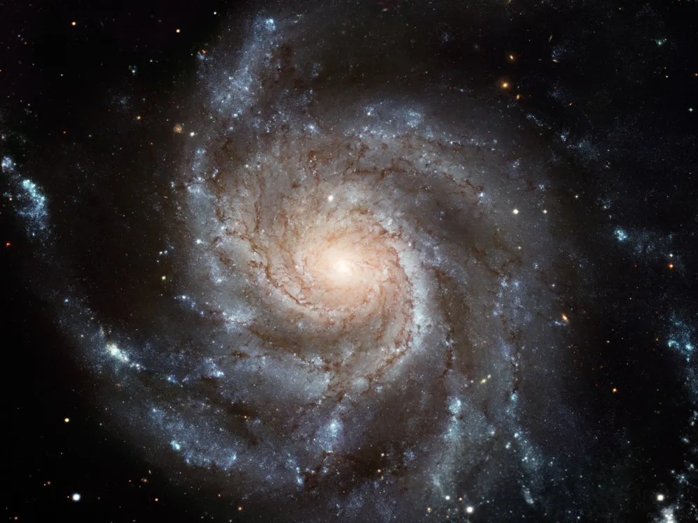
Molinete Galaxy (Photo: NASA)အလင်းနှစ် ၂၅ သန်း အကွာမှာ ရှိတဲ့ ဒီ ဂလက်ဆီကြီးဟာ ကျွန်တော်တို့ မစ်ကီးဝေးထက် နှစ်ဆလောက် ကြီးပါတယ်။ ထူးဆန်းတာကတော့ ဒီဂလက်ဆီကြီးရဲ့ အလယ်ဗဟိုမှာ Black Hole ရှာမတွေ့ရတာပဲ ဖြစ်ပါတယ်
Hat Galaxy
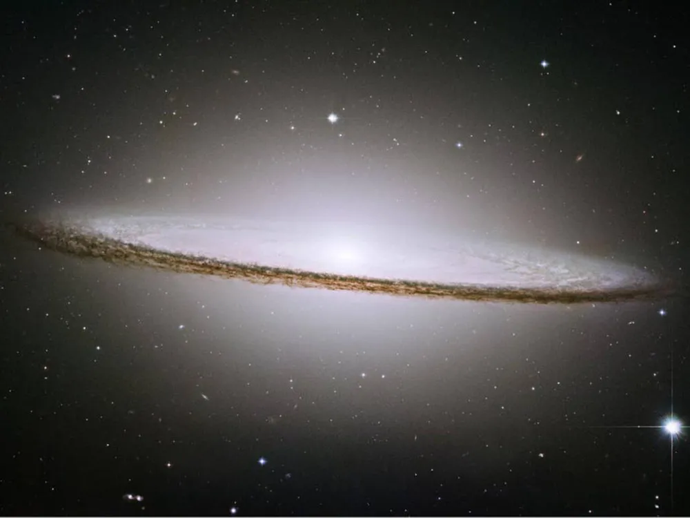
Hat Galaxy (Photo: NASA)အလင်းနှစ် ၂၈ သန်း အကွာမှာ ရှိတဲ့ ဒီဂလက်ဆီရဲ့ ပုံစံက မက်ဆီကန်တွေ ဆောင်းတဲ့ ဦးထုပ်နဲ့ တူနေပါတယ်။ ဥိးထုပ်နဲ့ တူနေရတာကတော့ အလယ်မှာ ရှိတဲ့ ပြန့်ကျဲနေတဲ့ ကြယ်အို ကြယ်ဟောင်းကြီးတွေကြောင့် အရောင်တွေ တောက်ပြီး နေလို့ ဖြစ်ပါတယ်။ ခလယ်က ဘောလုံးကြီးလို လင်းနေတဲ့ အရာတွေဟာ အိုမင်းနေတဲ့ ကြယ်အို ကြယ်ဟောင်းကြီးတွေ ဆီကနေ လာတဲ့ အလင်းရောင်ကြောင့် ဖြစ်ပါတယ်။
Galaxy NGC 4696
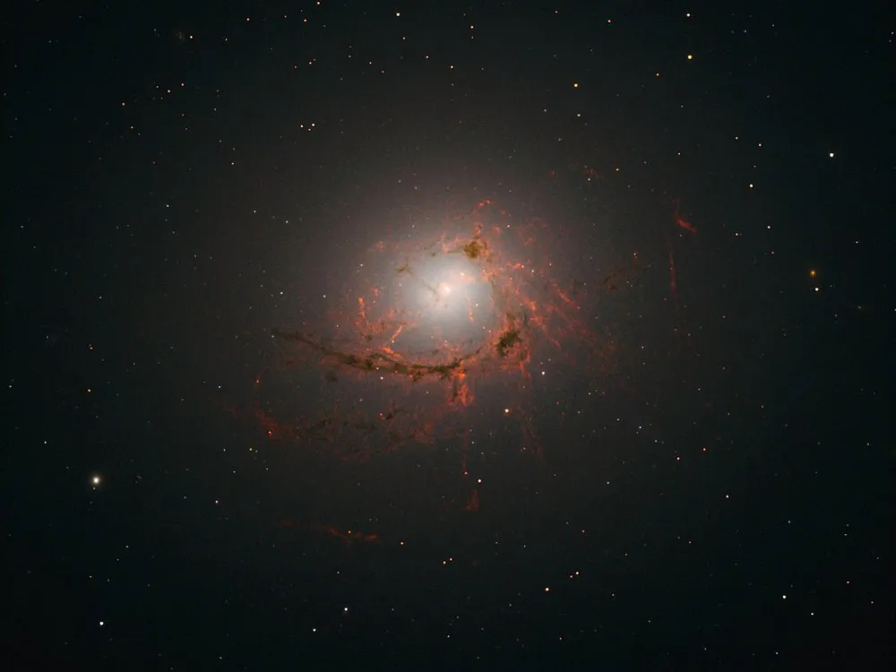
Galaxy NGC 4696 (Photo: NASA)ဒီဂလက်ဆီက ဘဲဥပုံ ဂလက်ဆီပါ။ သူ့ပုံက သွေးကြောမျှင်တွေ ယှက်နေတဲ့ ပုံမျိုး ဖြစ်နေပါတယ်။
Whirlpool Galaxy
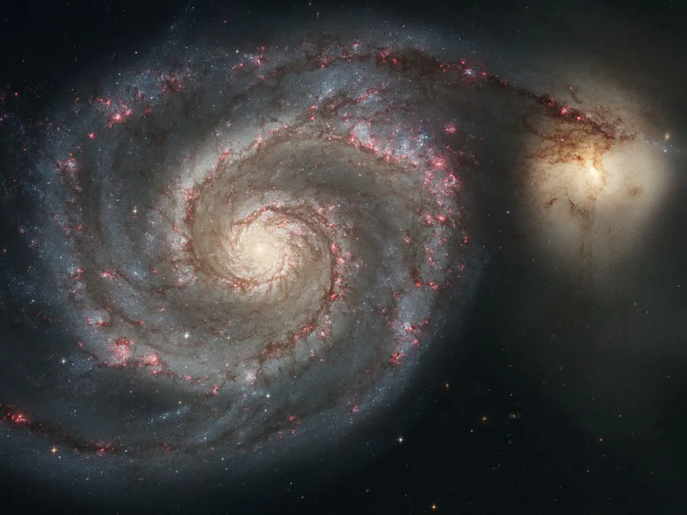
Whirlpool Galaxy (Photo: NASA)အလင်းနှစ် ၃၅ သန်း အကွာမှာ ရှိနေတဲ့ ခရုပတ် ဂလက်ဆီကြီးပါ။ ရေဝဲကြိးနဲ့ တူလို့ သူ့ကို ရေဝဲဂလက်ဆီ ဆိုပြီး အမည်ပေးထားတာပါ။ ဒီဂလက်ဆီရဲ့ အလင်းရောင်က တောက်ပလွန်းလို့ သူ့ကို ရိုးရိုးမှန်ပြောင်းနဲ့ ကြည့်ရင်တောင် မြင်နိုင်ပါတယ်။
Messier 81
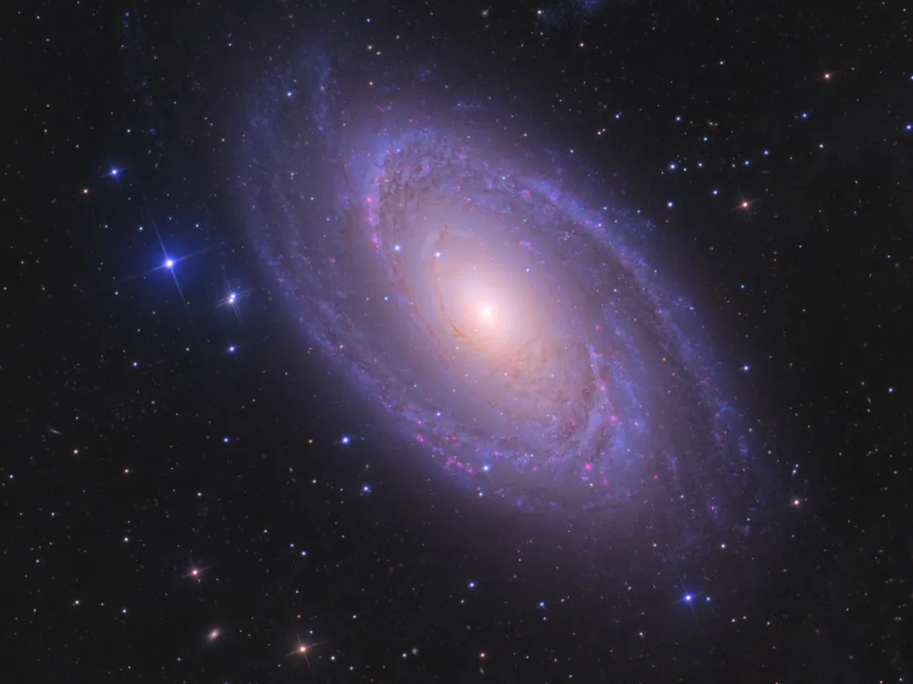
Messier 81 (Photo: NASA)အလင်းနှစ် ၁၂ သန်း အကွာမှာ တည်ရှိတဲ့ ခရုပတ် ဂလက်ဆီပါ။ ၁၇၇၄ ခုနှစ်ကတဲက ဂျာမန် နက္ခတ်ပညာရှင် ဂျိုဟန် ဘုတ် က ရှာတွေ့ခဲ့တာ ဖြစ်ပါတယ်။ သူ့မှာ ကြယ်ပေါင်း သန်း ၂၅၀,၀၀၀ လောက် ပါရှိမယ်လို့ ယူဆရပါတယ်။
Black Eye Galaxy
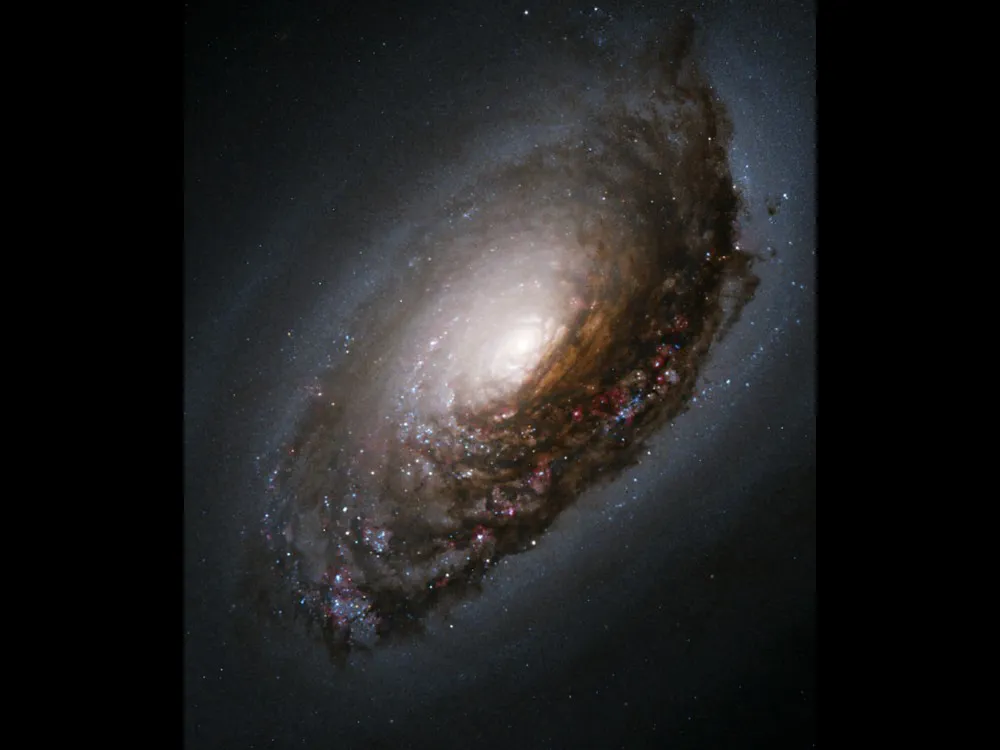
Black Eye Galaxy (Photo: NASA) အလင်းနှစ် ၁၇ သန်းမှာ ရှိတဲ့ ခရုပတ် ဂလက်ဆီ ဖြစ်ပါတယ်။ သူ့ကို “မကောင်းဆိုးဝါး မျက်လုံး (Devil’s eye)” လို့လဲ ခေါ်ကြပါတယ်။ အကျယ်အဝန်း အလင်းနှစ် ၄၀,၀၀၀ ရှိတဲ့ ဒီဂလက်ဆီကြီးဟာ တစ်စက္ကန့်ကို ကီလိုမီတာ ၃၀၀ နှုန်းနဲ့ လည်ပတ်နေပါတယ်။
Sunflower Galaxy
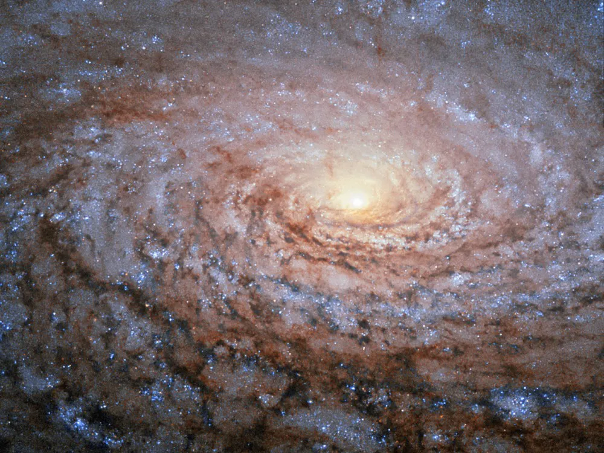
Sunflower Galaxy (Photo: NASA)၁၇၇၉ ခုနှစ်မှာ ပြင်သစ် ပညာရှင် ပီယဲ မီချိန် (Pierre Méchain) က ရှာတွေ့ခဲ့တဲ့ ဒီအလွန်လှပတဲ့ ဂလက်ဆီ ကြီးဟာ အလင်းနှစ် ၂၇ သန်း အကွာမှာ တည်ရှိပါတယ်။
MACS J0717
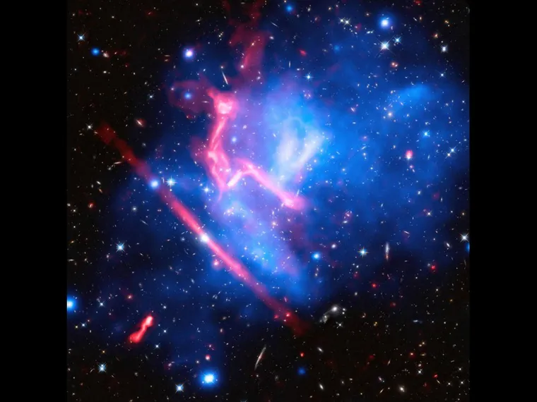
MACS J0717 (Photo: NASA)ပညာရှင်တွေက အထူးဆန်းဆုံးလို့ သတ်မှတ်ထားတဲ့ ဂလက်ဆီ ဖြစ်ပါတယ်။ ဒီ ဂလက်ဆီဟာ ဂလက်ဆီ ၄ စင်း တိုက်မိပြီး ဖြစ်လာတာ ဖြစ်ပါတယ်။ ကမ္ဘာကနေ ၅.၄ အလင်းနှစ် ဘီလီယံ အကွာမှာ ရှိတဲ့ ဒီ ဂလက်ဆီရဲ့ အကျယ်ဟာ အလင်းနှစ် ၁၃ သန်းတောင်မှ ရှိပါတယ်။ (ကျွန်တော်တို့ မစ်ကီးဝေးတောင် အလင်းနှစ် ၁၀၀,၀၀၀ ပဲ ကျယ်တာပါ)။
Messier 74
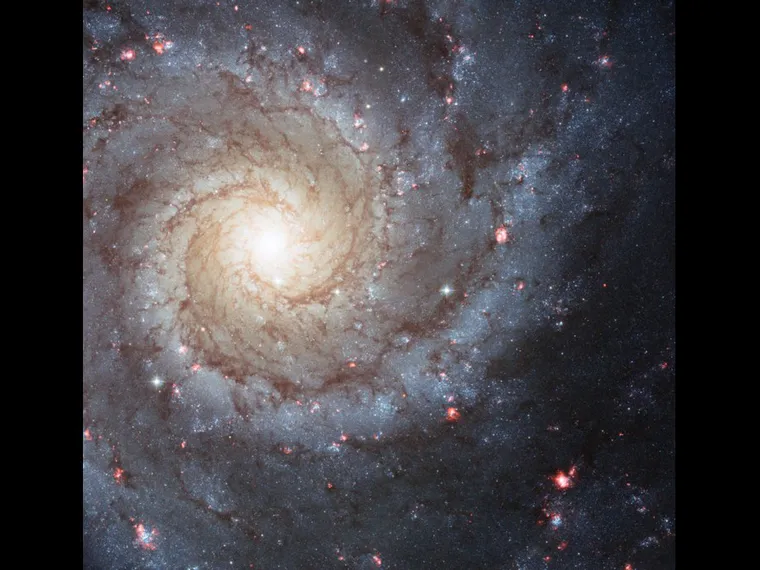
Messier 74 (Photo: NASA)1780 မှာ ချားလ်စ် မက်ဆီယေး (Charles Messier) က ရှာတွေ့ခဲ့လို့ ဒီနာမည် ပေးထားတာ ဖြစ်ပါတယ်။ (တကယ်က သူ့လက်ထောက်က ရှာတွေ့တာပါ)။ ကမ္ဘာကနေဆို အလင်းနှစ် သန်း ၃၀ ဝေးပါတယ်။ အလှဆုံး ဂလက်ဆီ တခုအဖြစ် သတ်မှတ်ခံရတဲ့ ဂလက်ဆီလဲ ဖြစ်ပါတယ်။ ဒီ ဂလက်ဆီပုံမှာ မြင်ရတဲ့ ပန်းရောင် အစက်လေးတွေက ကြယ်အသစ်တွေ ဖြစ်နေတဲ့ နေရာတွေ ဖြစ်ပါတယ်။
Galaxy I Zwicky 18
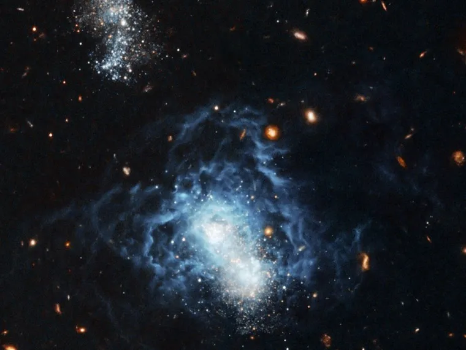
Galaxy I Zwicky 18 (Photo: NASA)၁၉၃၀ ခုနှစ်မှာ ရှာတွေ့ခဲ့တဲ့ ဒီဂလက်ဆီဟာ အတော်လေး ထူးဆန်းတဲ့ ဂလက်ဆီ တခု ဖြစ်ပါတယ်။ အလင်းနှစ် ၄၅ သန်း အကွာမှာ ရှိတဲ့ ဒီဂလက်ဆီဟာ စုစုပေါင်း သက်တမ်း နှစ် သန်း ၅၀၀ ပဲ ရှိပါသေးတယ်။ ဂလက်ဆီ တခုအနေနဲ့ ဆိုရင် အတော်လေး သက်တမ်းနုတဲ့ ဂလက်ဆီ ဖြစ်ပါတယ်။ နောက်ပြီး သူ့မှာရှိတဲ့ ကြယ်တွေမှာ ဟိုက်ဒရိုဂျင်နဲ့ ဟီလီယံပဲ ရှိပါတယ်။ ဒီဂလက်ဆီဟာ စကြာဝဠာ အစပိုင်းမှာ ဖြစ်ထွန်းခဲ့တဲ့ ဂလက်ဆီတွေနဲ့ အတော်လေး ဆင်တူပါတယ်။
Galaxies Antenna
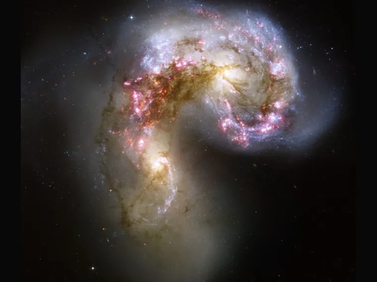
Galaxies Antenna (Photo: NASA)ဒီဂလက်ဆီ ကြီးဟာ တကယ်ကတော့ လွန်ခဲ့တဲ့ နှစ်သန်း ၆၀၀ လောက်က ဂလက်ဆီကြီး နှစ်ခု တိုက်မိကြရာကနေ ဖြစ်လာတဲ့ ဂလက်ဆီကြီး ဖြစ်ပါတယ်။ သူ့ပုံစံက အဝေးက ကြည့်ရင် အင်တင်နာတိုင်နဲ့ တူနေလို့ အင်တင်နာ ဂလက်ဆီ လို့ အမည်ပေးထားတာ ဖြစ်ပါတယ်။ ဒီ ဂလက်ဆီတွေဟာ အခုထိတော့ လုံးဝ အပြည့်အဝ ပေါင်းစပ်မိခြင်း မရှိသေးပါဘူး။
Galaxy NGC 6744
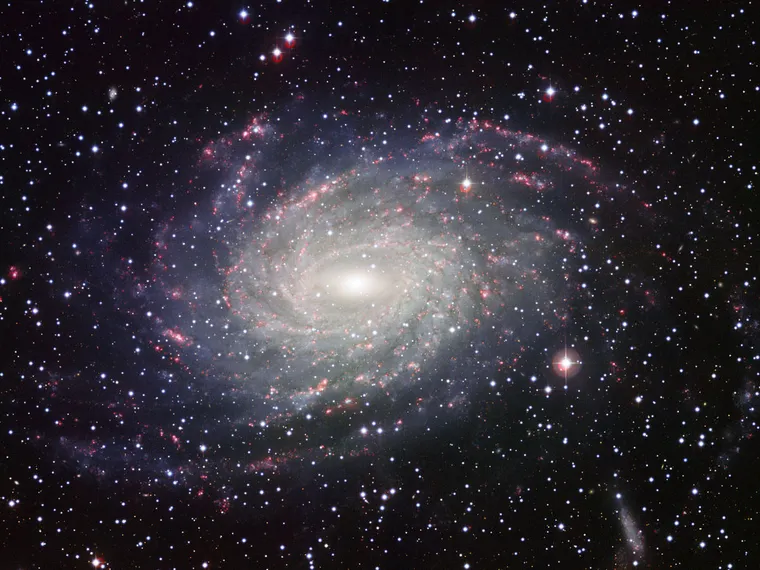
Galaxy NGC 6744 (Photo: NASA)ဒီ ဂလက်ဆီဟာ ကျွန်တော်တို့ မစ်ကီးဝေး ဂလက်ဆီနဲ့ အနီးစပ်ဆုံး တူညီတဲ့ ဂလက်ဆီ ဖြစ်မယ်လို့ ယူဆကြပါတယ်။ အကွာအဝေးအားဖြင့် အလင်းနှစ် သန်း ၃၀ ခန့်အကွာမှာ ရှိပါတယ်။
Messier 77
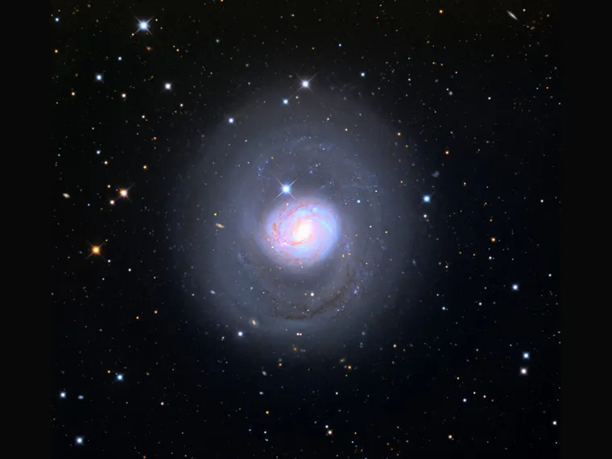
Messier 77 (Photo: NASA)ကျွန်တော်တို့နားက ဂလက်ဆီတွေထဲမှာ အကြီးဆုံး ဂလက်ဆီတွေထဲက တခုဖြစ်တဲ့ ဒီ ဂလက်ဆီကြီးဟာ ကမ္ဘာကနေ အလင်းနှစ် ၄၇ သန်း အကွာမှာ ရှိပါတယ်။ သူ့ရဲ့ အတိုဆုံးဆိုတဲ့ ခရုပတ် လက်တံကတောင် အလင်းနှစ် ၁၇၀,၀၀၀ အကွာအဝေးအထိ ရောက်ပါတယ်။
Kiso 5639
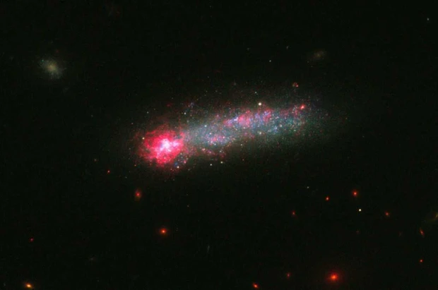
Kiso 5639 (Photo: NASA)ကောင်းကင်မှာ ကြယ်ပျံသွားတဲ့ ပုံပေါက်နေတဲ့ ဒီဂလက်ဆီက ကမ္ဘာကနေ အလင်းနှစ် ၈၂ သန်း အကွာမှာ ရှိပါတယ်။ သူ့ ဦးခေါင်းဟာ အလင်းနှစ် ၂,၇၀၀ ကျယ်ပါတယ်။
NGC 1291
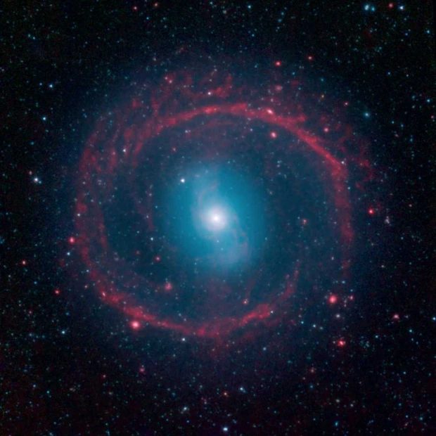
NGC 1291 (Photo: NASA)ဒီ ဂလက်ဆီရဲ့ ဘေးက ပန်းရောင် ကွင်းက ကြယ်တွေ အသစ်ဖြစ်နေတဲ့ ရပ်ဝန်း ဖြစ်ပါတယ်။
NGC 6872
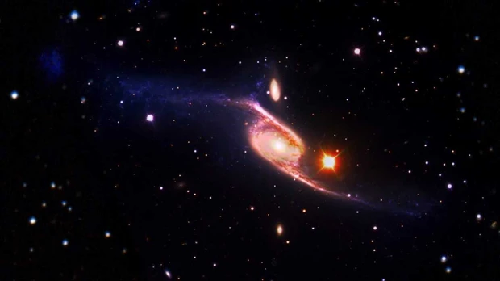
NGC 6872 (Photo: NASA)ဒီဂလက်ဆီဟာ အကျယ် အလင်းနှစ် ၅၂၂,၀၀၀ ရှိပါတယ်။ ကျွန်တော်တို့ မစ်ကီးဝေးထက် ၅ ဆ ပိုပြီး ကျယ်ပါတယ်။